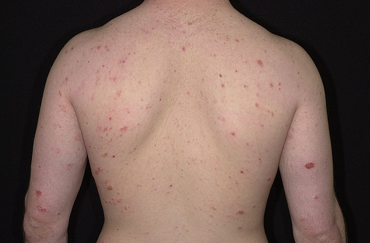

Eczema is a group of skin conditions that cause inflammation of the skin. Eczema is not caused by an infection. The condition may be temporary or chronic, mild or, in rare instances, very serious.
Serious cases usually occur when:
- it is severe enough to cause complications, such as skin infections.
- an affected person also contracts the herpes simplex virus.
- an affected person has a violent allergic reaction caused by contact dermatitis

Atopic dermatitis is the prevalent form of chronic eczema. It is a genetically inherited condition that tends to run in families who also suffer from hay fever and asthma. Atopic dermatitis will affect about 10% to 20% of people at some point in their lives.
Dyshidrotic eczema occurs on the palms of the hands, sides of the fingers, and the soles of the feet, and it is associated with itching and blisters.
Nummular dermatitis is a type of eczema that normally affects older adults. Round patches of scaly, inflamed skin may appear anywhere on the body, most commonly on the legs. Winter is the peak period for this condition. It tends to strike dry skin.
Stasis dermatitis (or gravitational eczema) affects the lower legs of older adults. It is basically a poor circulation problem, usually due to blood not being able to get out of the legs well. It is caused by varicose veins.
←Back to Prevention & Safety